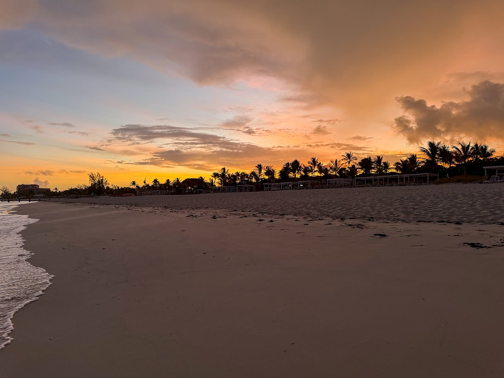
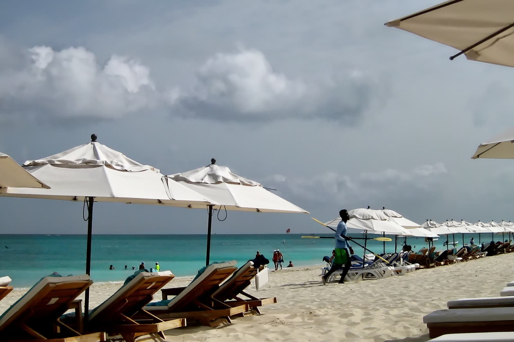
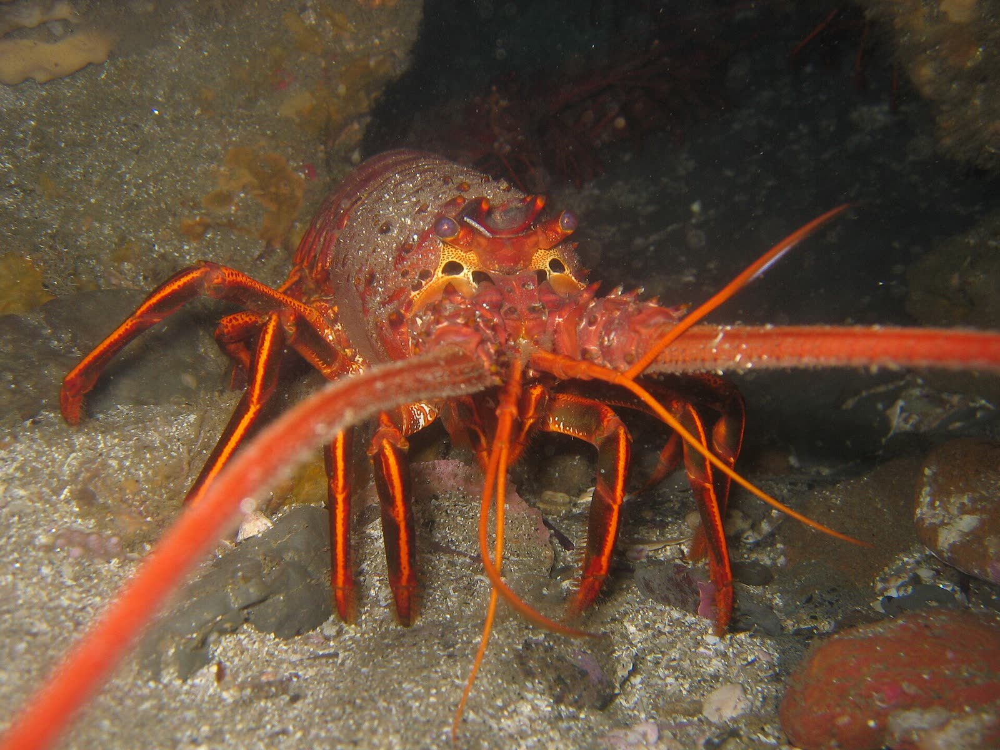
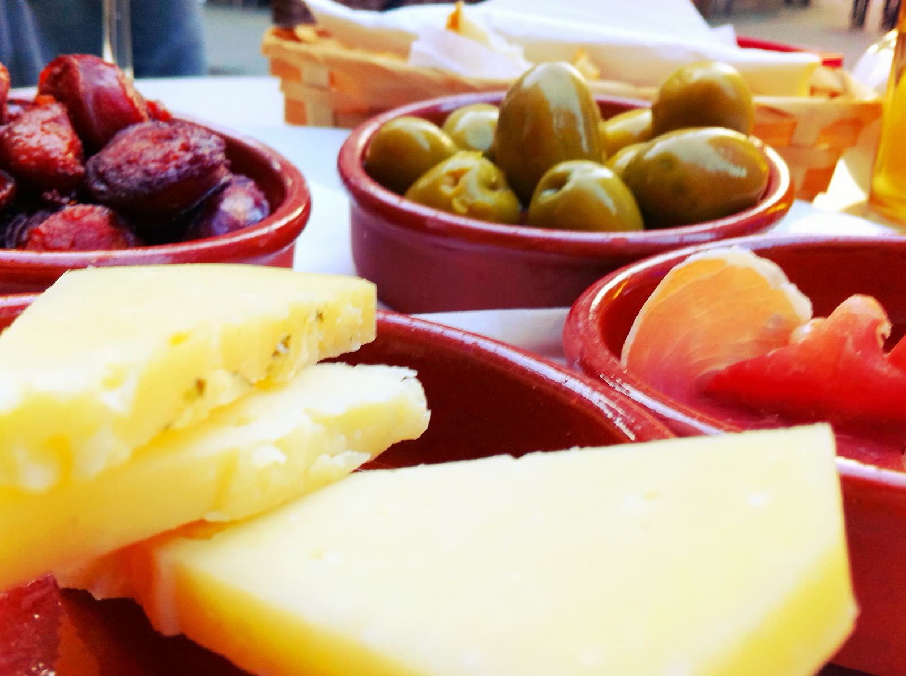
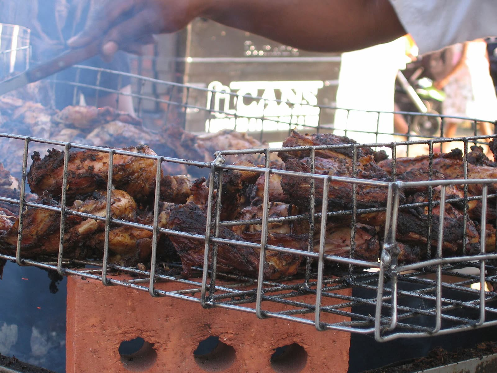
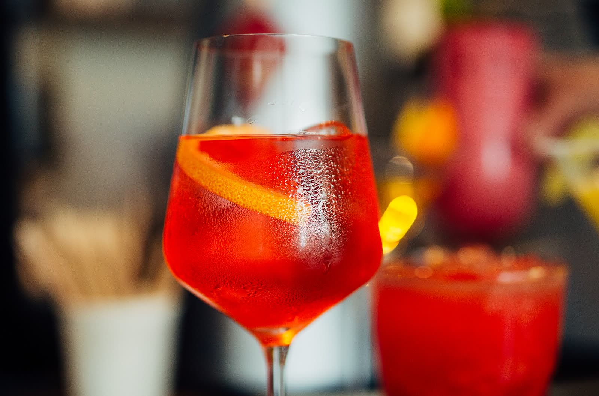
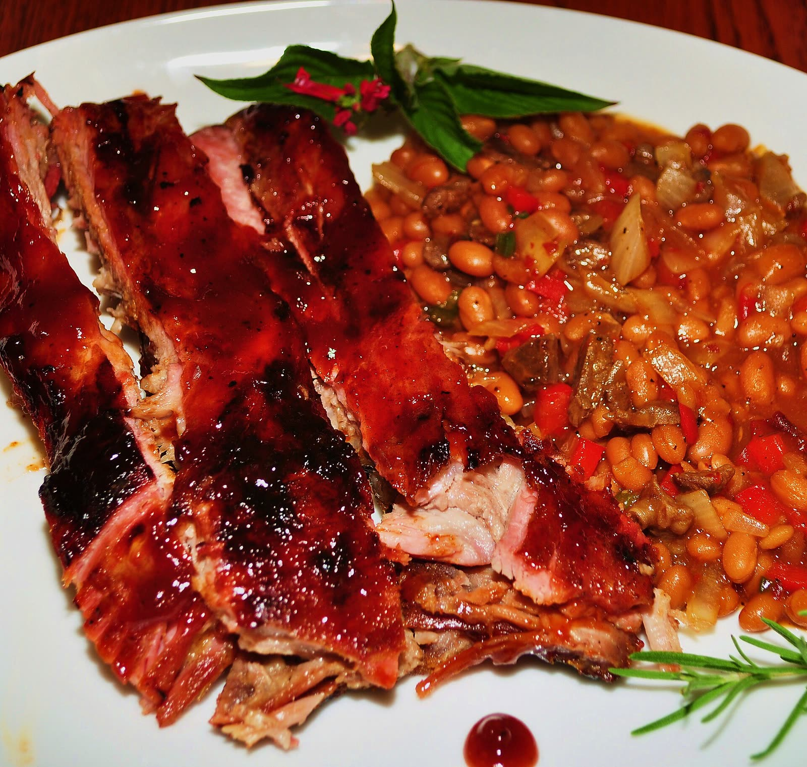
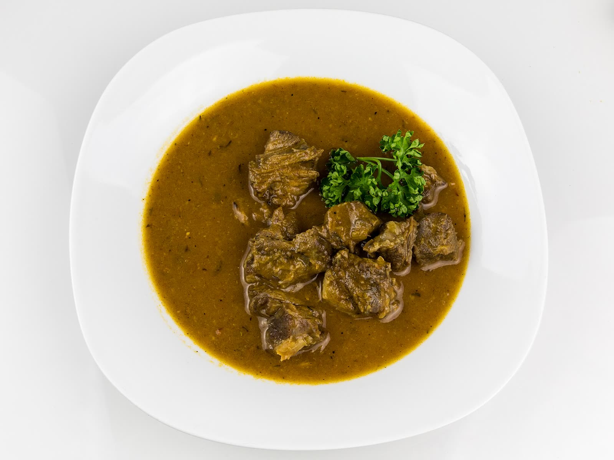
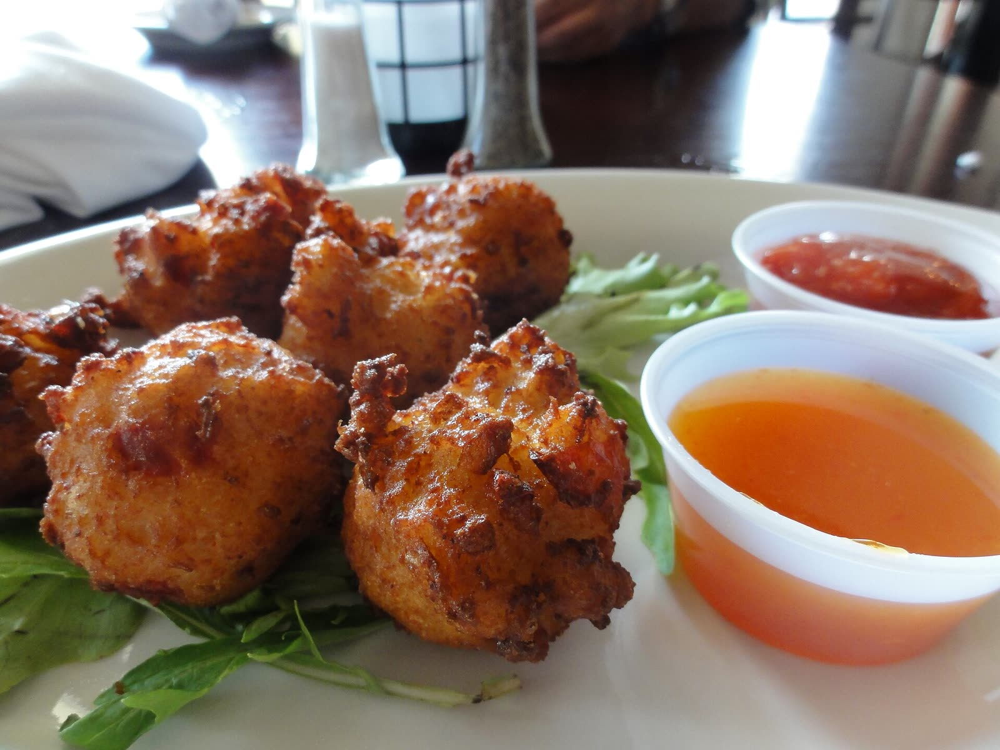
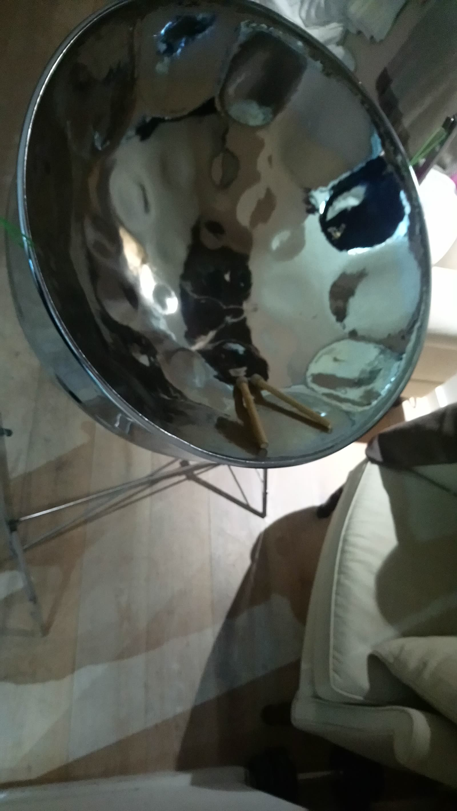

Jerk airline chicken
People's Choice, best jerk chicken
The centre of Sunday's Jerk Fiesta, and the plate people come back for.



Open every day, 7:30 am to 10 pm
Poolside at Royal West Indies on Grace Bay. Breakfast, lunch and dinner, half-price happy hour, and three big nights a week.
Anthony Garland and Murad Mohamad opened Pelican Bay in November 2010, beside the pool at the Royal West Indies Resort. You don't need to stay here to eat here: walk over from the beach.




All-you-can-eat lobster, cooked live on charcoal in front of you. From April to July, while lobster is out of season, it becomes the all-you-can-eat Caribbean BBQ Cookout.
Fresh local produce and island delicacies, made by the kitchen right in front of you.
The award-winning jerk chicken and BBQ ribs, with local dishes alongside.
Half price on alcoholic drinks and house wines. Locals and visitors, one bar.
Put in your dates and see every theme night you'll catch, then ask for a table.
Executive Chef Peter Redstone cooks local and international side by side. Two of his plates won the People's Choice at the Caribbean Food & Wine Festival.
People's Choice, best jerk chicken
The centre of Sunday's Jerk Fiesta, and the plate people come back for.

People's Choice, best BBQ ribs · 38
Louisville-style ribs in the house BBQ jerk sauce, finished with passion fruit, with creamy mash and slaw.

Locally inspired · 39
Guinness braised oxtails with butter beans, sweet plantain and cilantro rice.

At lunch · 19
Local hush puppies full of conch, herbs and spices, with island mayonnaise cocktail sauce.
4.3out of 5 from 2,237 reviews, as counted by VisitTCI
Two People's Choice trophies from the Caribbean Food & Wine Festival: best jerk chicken and best BBQ ribs.
Eaten with us? Tell the next guest how it was.

No. Pelican Bay is open to everyone, whether you're staying at the resort, along Grace Bay or anywhere on the island.
It sits beside the resort pool, and Grace Bay beach is a short walk away. Parking is at the Grande Court beach access next door, and you can walk along the sand from Club Med Turkoise, Ocean Club East and West and Grace Bay Club.
Every Wednesday from 5:30 to 10 pm during lobster season, August to March. From April to July, while lobster is closed, Wednesday is the all-you-can-eat Caribbean BBQ Cookout instead.
Menu prices are before sales tax and a 10% service charge. For parties of 8 or more an extra 10% gratuity is added to the bill.
Yes. There's a kids menu on request, and every menu marks its vegetarian, vegan, gluten free and spicy dishes.
Yes, on Grace Bay beach or under the stars in the poolside garden, with a wedding package and a catering menu. Email info@pelicanbaytci.com to start planning.
Or call ahead for a table, and ask about weddings and private parties by the pool.
Call or write
info@pelicanbaytci.com 649 941 2365Also 649 431 9103 and 649 431 9101
Royal West Indies Resort, 1 Grande Court, Grace Bay, Providenciales. Open every day, 7:30 am to 10 pm. Directions